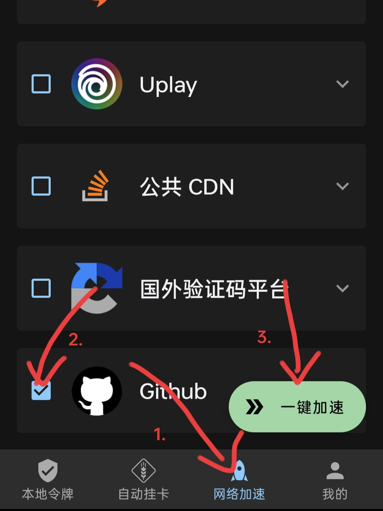
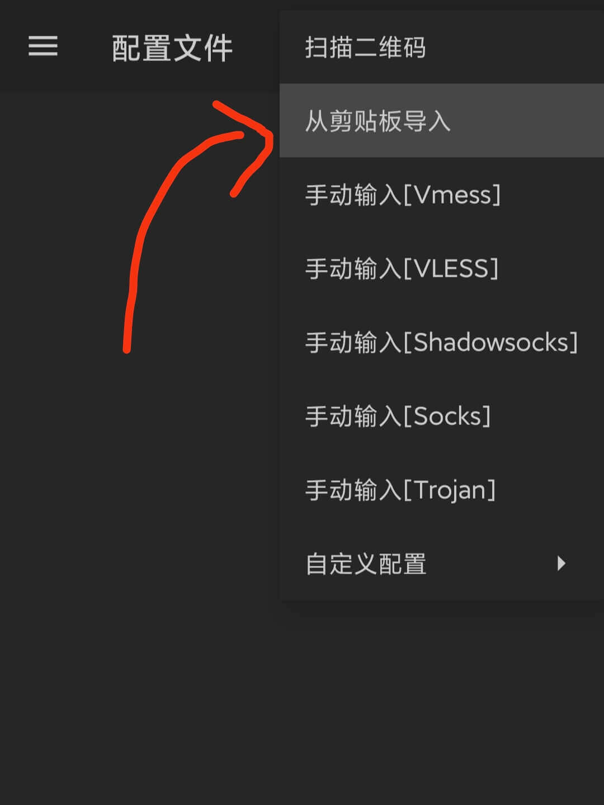
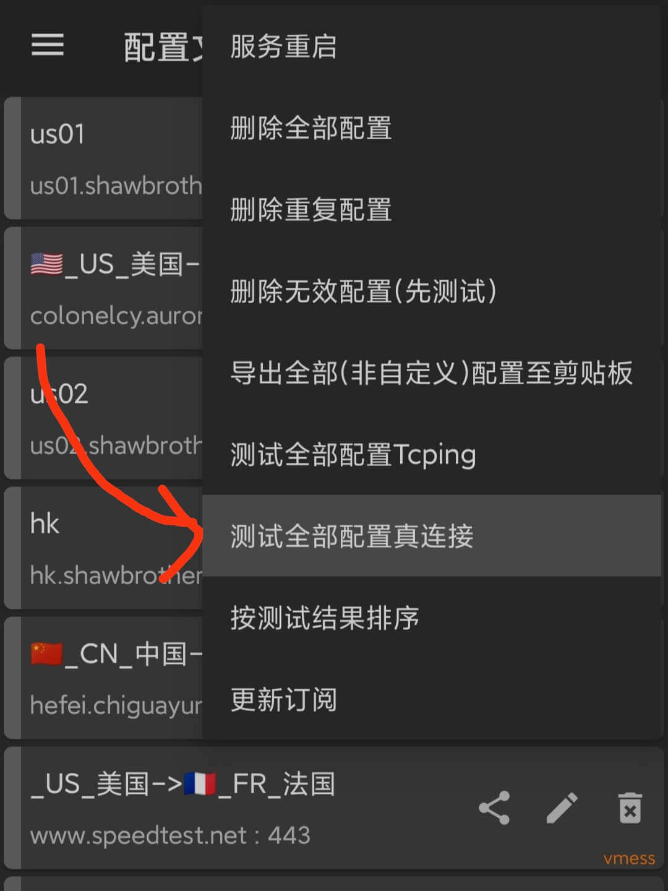

很不幸, 你生在了一所信息上的监狱。 这是一个没有谷歌, 没有维基百科, 没有OpenAI, 没有Github, 网络资源不到全体5%的荒原。如同太平洋中心的尼莫点, 与世隔绝。 一些公司, 凭借着令人讨厌的敏锐, 垄断了大陆市场, 窃取用户的隐私, 拿着他们畸形的软件, 赚得盆满钵满。 可悲的是, 几亿网民根本没有察觉, 甚至为它们摇旗呐喊。

tutorial article chinese
很不幸, 你生在了一所信息上的监狱。 这是一个没有谷歌, 没有维基百科, 没有OpenAI, 没有Github, 网络资源不到全体5%的荒原。如同太平洋中心的尼莫点, 与世隔绝。 一些公司, 凭借着令人讨厌的敏锐, 垄断了大陆市场, 窃取用户的隐私, 拿着他们畸形的软件, 赚得盆满钵满。 可悲的是, 几亿网民根本没有察觉, 甚至为它们摇旗呐喊。
!IMPORTANT!: 免费节点并不可靠，仅供临时或应急使用。一个付费，但价格相对优惠的机场：快帆云 (对VPN研究不深，也许有更加划算的节点，这里仅作参考)
在Github上，有一个专门设立的免费v2ray节点仓库，每日更新。但尴尬的是，访问Github本身就需要翻墙 😅。因此，在这一部分，我们将首先获得对Github的访问。
尝试点击这里，正常情况下，你将在漫长地等待后收到一个浏览器返回的错误信息。然而，如果你能打开它，那么，幸运儿，请直接跳转到第二部分吧。要相信，爱，魔法，和奇迹是总会存在的。
如若幸运女神没有眷顾你，那我们就需要借助一些工具了。访问Watt Toolkit 官网，点击 下载 Android 版，然后指定 蓝奏云网盘下载。 
安装下载好的APK（对于部分手机，需要断网后才可以安装）。按照下方图片，选择 Github，并选择 一键加速，随后按软件向导完成剩余步骤。 
你可以使用以下方式来下载v2rayNG的安装包：
安装下载的APK，前往Github中存放免费节点的仓库。如图，复制全部节点的Base64编码 > 有时，你会失望地发现Github仍无法访问，那么，请尝试先断开第一部分中 Watt Toolkit 中对Github的加速，再重新连接。如果仍无法解决，换个良辰吉日重试吧😂。
点击v2rayNG上方控制栏的 + 按钮，然后选择 从剪贴板导入。 
点击右上角的 ⋮ 按钮，选择 测试全部配置真连接 。测试完成后，再次点击 ⋮ 按钮，选择 按测试结果排序 。  
滚动到页面顶部，点击最上方的一栏。（不一定是图示的一栏，以实际情况为准） 
点击应用右下方的 V 按钮。（如果弹出类似 “是否运行v2rayNG创建VPN连接” 的对话框，选择允许） 
恭喜，现在自由互联网的大门才真正向你敞开！